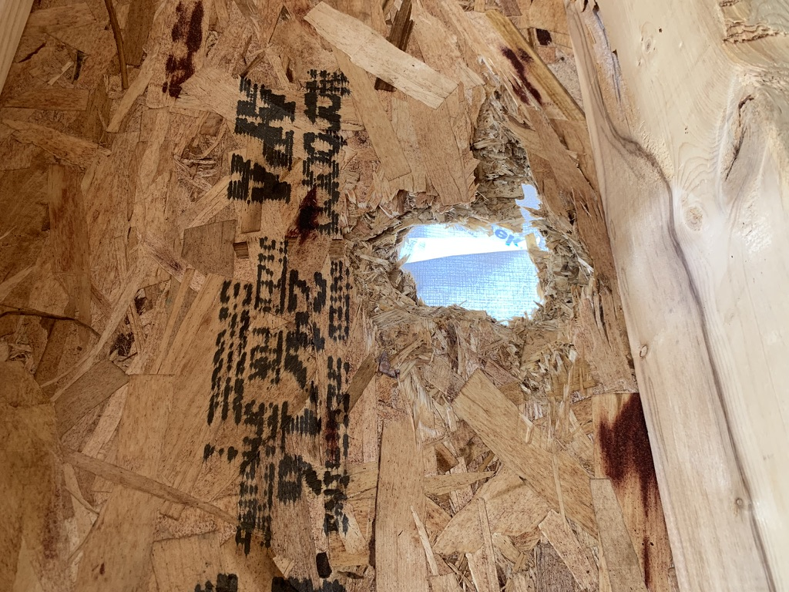

Holes in house being framed | March, 2022
During construction we were doing an authorized walkthrough with the builder. We noticed some holes... in the walls. Not just a couple, they were all over the house! The holes looked like someone sloppily hacked them out with a hammer. Our realtor asked that these entire boards be replaced. We were assured the issue would be corrected. The way they corrected this was not by replacing the boards but putting a 2x4 board over the holes (see pic of the repair below).
I can't say that I feel comfortable with the repair that was made to address all of these holes especially given the other major issues we have had with water coming in the house already.
